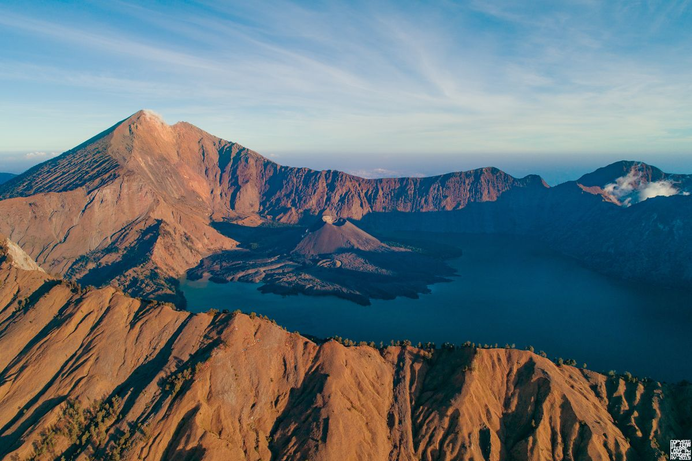
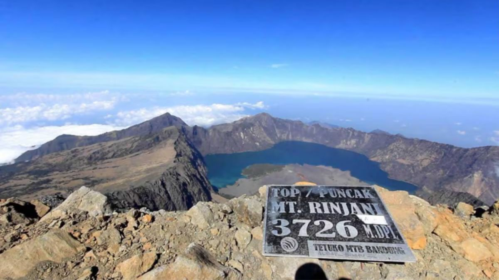
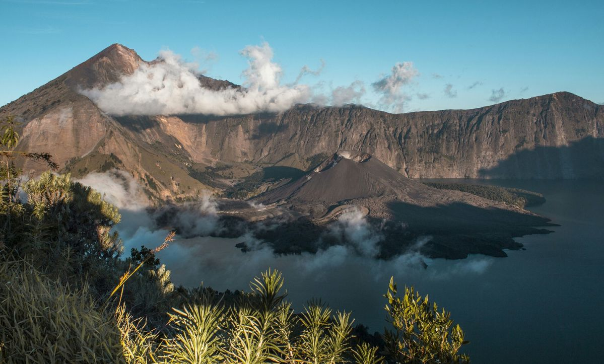

Topografi

Gunung Rinjani memiliki titik tertinggi 3.726 mdpl, mendominasi sebagian besar pemandangan Pulau Lombok bagian utara.
Di sebelah barat kerucut Rinjani terdapat kaldera dengan luas sekitar 3.500 m × 4.800 m, memanjang kearah timur dan barat.
Di kaldera ini terdapat Segara Anak (segara dalam Bahasa Sasak berarti laut atau danau) seluas 11.000.000 m persegi dengan kedalaman 230 m
Di sisi timur kaldera terdapat Gunung Baru (atau Gunung Barujari) yang memiliki kawah berukuran 170m×200 m dengan ketinggian 2.296 – 2376 mdpl.
Gunung kecil ini terakhir meletus pada tanggal 25 Oktober 2015 dan 3 November 2015,[3] setelah sebelumnya tercatat meletus Mei 2009 dan pada tahun 2004
Geologi

Gunung Rinjani (3726 mdpl) merupakan tipe Gunung Stratovulkanik, yang memiliki kaldera terbesar ketiga di Indonesia setelah Kaldera Tengger (Keliling 46 km) dan Kaldera Tambora (Keliling 37 km).
Sama seperti Gunung dengan kaldera lainnya, di pusat kaldera Gunung Rinjani masih terdapat Kerucut Piroklastik.Kerucut piroklastik Barujari, Hasil pasca kaldera yang paling menonjol di gunung api Rinjani
terbentuk di ujung timur Kaldera Segara Anak yang berbentuk oval. Pemandangan 1993 (lihat Gambar di atas) diambil dari tepi kaldera Tenggara menunjukkan semenanjung di sebelah kanan yang dibentuk oleh aliran lava
dari material gunung api yang memasuki danau kaldera pada tahun 1944 serta aliran lava di sisi kiri Barujari yang mengalir ke utara dan selatan ke danau selama Letusan tahun 1966.
Gunung Rinjani dulunya dinamakan Gunung Samalas. Gunung Samalas ini berakhir ketika erupsi kira-kira pada tanggal 1 Juli 1257, ± 90 hari. sebelum lokasi erupsi diketahui, pemeriksaan ice core di seluruh dunia telah
menemukan tingginya pengendapan sulfat sekitar tahun 1257, hal inilah yang memberikan bukti kuat bahwa letusan gunung berapi besar telah terjadi di suatu tempat di dunia. Bukti selanjutnya dilakukan menggunakan sampel
batuan endapan piroklastik yang tersebar di utara hingga selatan pulau Lombok.Sejarah Pengamatan Gunung Rinjani mencatat aktivitas erupsi pertama pada tanggal 10 September 1846 dengan VEI 2. Sejarah Gunung Api Rinjani
mencatat telah terjadi erupsi sebanyak 21 kali selama kala Holosen. Dalam Kaldera Gunung Rinjani terdapat kerucut piroklastik yang sudah mengalami 18 kali erupsi dalam sejarah pengamatan.
Catatan Sejarah
Tatanan tektonik dari Gunung Rinjani yaitu Subduksi pada Lempeng Benua (>25 km), hal ini menyebabkan tipe batuan Mayor lebih ke arah batuan beku Intermediate, yaitu Andesit hingga Basaltik Andesit, Basalt hingga Picro-basalt,
Trasibasalt hingga Tephrite Basanite dan Dasit. Namun, Terdapat tipe batuan minor yang ditemukan dalam bentuk riolit (Batuan Beku Asam). Batuan beku riolit jarang ditemukan di zona subduksi, hal ini lah yang meyakinkan geosaintis
bahwa Gunung Rinjani dapat erupsi besar lagi jika suatu saat ditemukan material batuan riolit yang banyak. Namun perlu adanya pengamatan visual, geokimia, seismik dan deformasi untuk menentukan prakiraan erupsi di masa yang akan datang.
Legenda Gunung Rinjani

Legenda ini menceritakan Dewi Anjani, putri dari seorang raja dan peri, yang merasa sangat dekat dengan alam dan akhirnya memutuskan untuk menjadi bagian dari alam tersebut, sehingga terjadilah Gunung Rinjani sebagai manifestasi dari Dewi Anjani
Masyarakat sekitar percaya bahwa Dewi Anjani tinggal di puncak Gunung Rinjani, di sebuah istana gaib yang tersembunyi dari pandangan manusia. Ia dianggap sebagai pelindung gunung dan seluruh makhluk hidup di sekitarnya, termasuk Danau Segara Anak
yang terletak di kawah gunung.Dewi Anjani, menurut tradisi tutur masyarakat NTB, adalah anak dari Dewi Mas, permaisuri Kerajaan Tuan yang diusir karena difitnah oleh istri kedua raja. Dewi Mas difitnah bahwa bayi yang dikandungnya bukanlah anak Raja Tuan.
Sejarah Letusan

Kejadian ini terekam di dalam naskah lontar Babad Lombok. Letusan ini menyisakan sebuah kaldera besar yang kini berisi Danau Segara Anak. Aktivitas kegunungapian pada masa berikutnya menciptakan lebih banyak pusat-pusat vulkanis di dalam kaldera tersebut,
termasuk Puncak Barujari, yang masih aktif hingga sekarang. Semburan aerosol yang dihasilkan oleh letusan ini memenuhi udara dan mengurangi radiasi matahari yang menggapai permukaan bumi. Hal ini menyebabkan pendinginan lapisan atmosfer selama beberapa tahun
hingga menyebabkan kegagalan panen dan kelaparan di Eropa serta belahan bumi lainnya, meskipun tingkat keparahan anomali temperatur beserta dampaknya masih diperdebatkan. Ada kemungkinan bahwa letusan ini memicu terjadinya Zaman Es Kecil yang berlangsung selama berabad-abad.